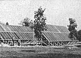

Here's a look at a real "alternative" in energy education:
Considering all the emphasis that's being put on alternative energy these days, it's no wonder that many institutions of higher learning are offering courses with such inviting titles as "Solar Energy System Design", "Residential Earth-Sheltered Building Techniques", and "Wind Power Conversion Systems". But - as is all too often the case in many large universities - the lion's share of such knowledge is sometimes available only from an impassive textbook. And, even when he or she is given the benefit of a concerned and well-informed instructor, it's difficult to imagine a student receiving thorough training in any technical field without actually getting some "hands on" experience.
Recently, however, one of MOTHER's editors was asked to participate in an energy-oriented "Open House" at the Cedar Springs, Michigan campus of Jordan College (a small, four-year school stressing the practical and liberal arts, but offering business courses as well) . . . and our staffer was not only amazed at the extent to which alternative energy was used at that 250-person academic center, but impressed to find that the majority of the work had been - and was still being - done by the students.
Although Jordan College actually comprises five separate Central Michigan campuses, the Cedar Springs location serves as the showplace for alternative technology . . . and, as early as 1975, that campus began working toward energy self-sufficiency. During the first year, the students and administration fabricated a 1,000-square-foot forced-air solar heating system from - believe it or not - discarded beverage cans. Each section of the three-unit arrangement incorporates its own collector, storage bin, and air handler . . . and - when all three are used jointly - the setup provides partial heating for a 5,000-square-foot classroom facility.
Jordan's second solar project came about as the result of a grant from the U.S. Department of Energy: A 2,080-square-foot, 104-collector network - one which is plumbed to work in conjunction with the original gas-fired water boiler - generates half a million BTU per hour, and supplies 180°F water to the existing hydronic system within a 7,250-square-foot residence hall. It's estimated that the "drain down" collectors (the liquid medium is stored in housed, insulated tanks at night to eliminate start-up lag time in frigid weather) provide about 25% of the building's space-heating load and 50% of its hot water needs.
Additional solar heating systems were also developed at Jordan, both to provide some do-it-yourself experience to those enrolled there and to bring the institution still closer to its goal of total energy self-sufficiency. The installations include the "Jordan Air" system, which is a simple 8' X 24' wood-framed and fiberglass-covered active collector with an output of 32,000 BTU per hour and a supplementary rock storage area . . . a slightly smaller collector that's similar in design to the "beer can" unit mentioned previously and ties in with the rock-filled thermal holding bin . . . and three separate liquid-handling setups - ranging in size from 50 to 196 square feet - which provide domestic hot water for the campus chapel and administration building.
Jordan College's students and staff haven't limited their work to solar power, either. A 4.5-KW wind generator has been mounted on a surplus oil derrick and coupled - through a Gemini synchronous inverter - to the utility grid. Originally, this three-bladed upwind machine fed direct current to a bank of 55 two-volt batteries that provided power for DC lights and motors in a greenhouse and student lounge . . . but, when the inverter was donated, it allowed for more practical DC-to-AC conversion.
On a smaller scale, the Michiganbased college is also involved in other kinds of alternative energy production . . . including the manufacture of methane, the design and use of ethanol-producing stills, and the generation of electricity through photovoltaic panels. And - to allow botany classes to enjoy "field" experiments beyond the normal growing season - a 14' X 26' triple-glazed, solar-heated greenhouse (complete with a eutectic salt storage system) was built several years ago.
Besides doing their best to promote the use and understanding of alternative energy systems here at home, the folks at Jordan College sponsor tours - sometimes in conjunction with MOTHER - to foreign countries that are pioneering the development of solar energy. Last year, one such joint effort resulted in a truly enlightening trip to oil-poor, but sun-drenched Israel . . . another expedition will be returning from the Middle East just about the time you get this magazine . . . and two European trips are scheduled later this year (see page 86 for all the details).
Information gleaned in the course of such travels is, of course, put to practical use at Cedar Springs whenever possible . . . and the president of the college, DeWayne Coxon, has big plans for the school and its students. Eventually he hopes to be able to produce - by driving a modified gasoline engine/alternator combination with biomass-derived methane - enough electrical power to serve the needs of the entire campus . . . and to expand the usefulness of the school's solar heating system by incorporating a liquid storage system large enough to maintain hot water on an annual basis! If these feats are accomplished, Jordan will have the first 100% energy self-sufficient campus in existence . . . an "A+" achievement in anyone's book.
EDITOR'S NOTE: For more information on the school's alternative energy and academic programs, write to Jordan College, Dept. TMEN, 360 West Pine Street, Cedar Springs, Michigan 49819.
|
Staff Photos [1] Solar collectors help with the heating and hot water needs. [2] Jordan's 4.5-KW windplant. [3] The solar green house |
 A new project underway! |
|